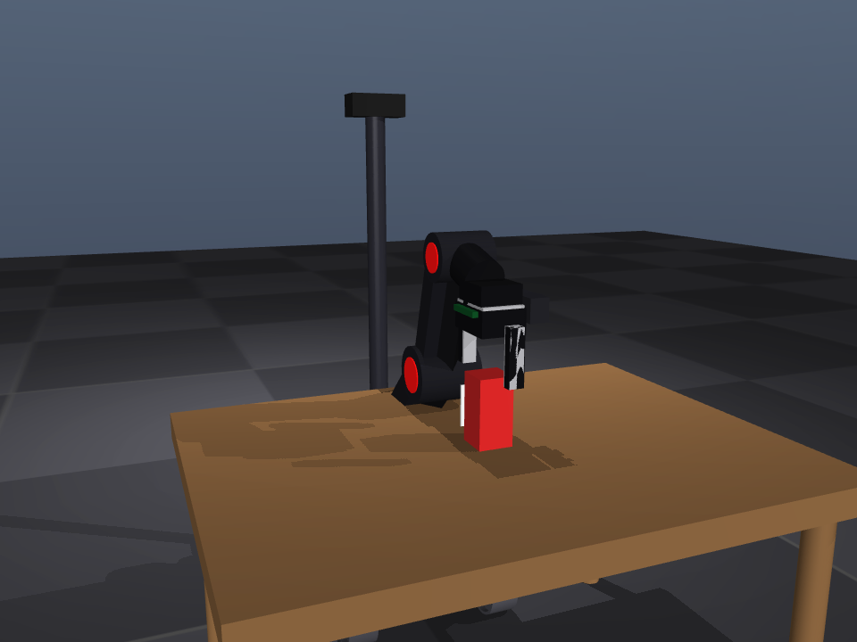
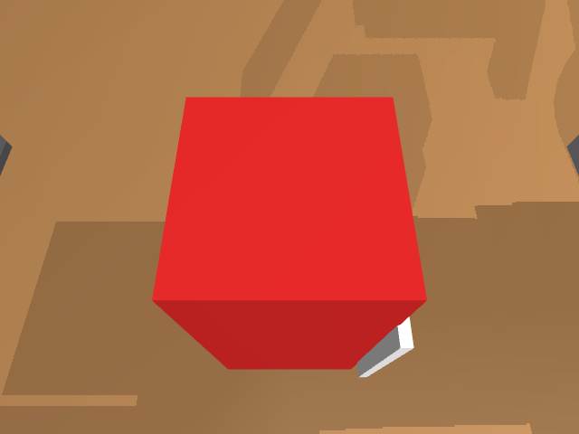
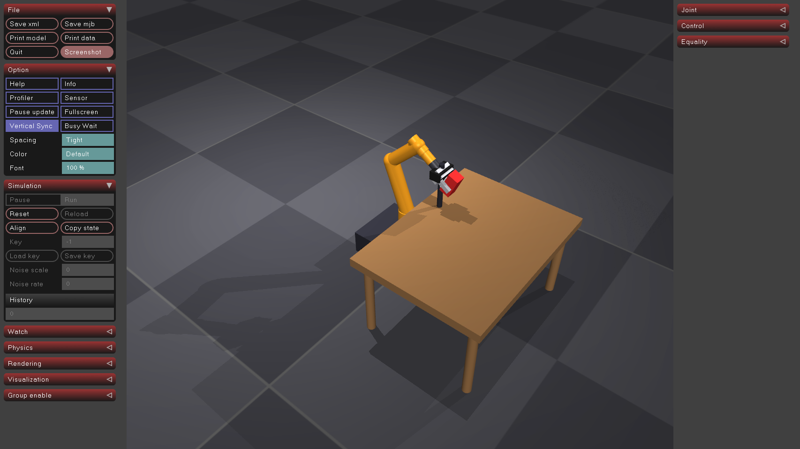

Autonomous Mobile Manipulation — Perceive, Navigate, Dock, Grasp, Place
Project Overview

The mobile manipulator — mobile base, 6-DoF arm with red joint accents, parallel-jaw gripper, head-camera mast, and an eye-in-hand RGB-D camera on the wrist.
Every layer of the stack was built and benchmarked separately, then integrated into one finite-state machine: a classical AprilTag pose detector and a learned CNN pose estimator for perception, an analytical IK solver and three learned grasp policies (Behaviour Cloning, PPO) for manipulation, and a goal-conditioned SAC+HER policy for base navigation.
The most valuable results were not the success rates but the five diagnosed failure mechanisms found along the way — a physics-level parking bug that masqueraded as a controller problem, chaotic seed-sensitivity in numerical IK, a reward-hacking RL policy, the categorical necessity of HER for sparse goal-reaching, and a recovery mechanism that was silently hiding navigation failures.
Headline Results
| Component | Result |
|---|---|
| AprilTag detector (ROS 2 node) | 100% detection at 0.4–1.3 m @ 640×480, ~6 mm median error |
| CNN pose estimator (MobileNetV2) | 26 mm median on 224² domain-randomized set; 13 mm median at FSM search poses |
| Analytical IK (IKPY, multi-seed) | FK exact vs MuJoCo; grasp waypoints 0 mm residual, branch-sane |
| SAC + HER navigation | 100% arrival, 14 mm mean position error, 4° yaw, ~13 steps |
| Scripted IK grasp | 100% (140/140 across seeds) |
| Behaviour Cloning (retrained on post-fix demos) | 100% (60/60; 75% before the environment fixes) |
| PPO grasp (shaped reward) | 0% usable — reward-hacked "fling" (see Findings) |
| FSM end-to-end, AprilTag vision | 100% (110/110 over seeds) |
| FSM end-to-end, CNN search + tag refine | 98% (59/60) |
System Architecture
The MJCF scene contains a mobile base (holonomic in simulation), a 6-DoF UR5-style
serial arm, a parallel-jaw gripper, a head camera on a mast, an eye-in-hand RGB-D
camera on the wrist, a table, and a 5 cm target object carrying a tag36h11 AprilTag.
A ROS 2 bridge exposes /joint_states, /joint_commands,
/cmd_vel, and /object_pose — the same contract a real robot
driver would sit behind.
The finite-state machine
- SEARCH — rotate in place until the head camera yields a consistency-gated object estimate (≥4 of 5 stationary frames agreeing within 2.5 cm). If a full rotation sees nothing, drive to a fixed scan pose and rescan from 0.7–0.9 m.
- NAVIGATE — the goal-conditioned SAC+HER policy drives to a grasp standoff computed from the coarse estimate, with the arm folded into a travel stow.
- REFINE + precision dock — re-estimate from the standoff (<1 mm lateral with the tag facing the camera dead-on) and re-navigate if the goal moved. Episodes that never truly arrive are counted as failures.
- GRASP — reactive scripted IK expert with multi-seed, branch-sane IK, base braked by restoring wheel-floor friction for this phase.
- PLACE — Jacobian resolved-rate Cartesian carry to the drop point, avoiding IK branch jumps from the held pose.


Left: the base docked at the grasp standoff with the gripper closing on the 5 cm target. Right: the eye-in-hand RGB-D camera view used for close-range grasp verification.
Perception — AprilTag Baseline
A ROS 2 node detects a tag36h11 fiducial on the target object using
cv2.aruco plus solvePnP with the IPPE_SQUARE
method, and publishes the 6-DoF pose as a PoseStamped in the head camera's
optical frame. The effective tag size (0.0393 m) was calibrated by rendering the tag at
known depths and measuring the marker side in pixels.
| Tag distance | Detection rate | Median position error |
|---|---|---|
| 0.4 – 0.7 m | 100% | 6.9 mm |
| 0.7 – 1.0 m | 100% | 5.9 mm |
| 1.0 – 1.3 m | 100% | 7.0 mm |
Bringing perception up exposed three genuine bugs in the simulation model: the head camera was aimed nearly straight down at the floor and never saw the table, the target object was sunk 2 cm into the table (dropping the tag onto the table edge and killing its quiet zone), and without multisample anti-aliasing the small tag aliased badly enough to fail decoding.
Domain-randomized dataset generator
A headless MuJoCo script renders RGB-D frames while randomizing object pose, camera viewpoint, lighting, and object/table colour, writing ground-truth 6-DoF pose labels in the same optical-frame convention as the AprilTag detector so the two are directly comparable. 10,000 samples generate in a couple of minutes.
Learned Perception — CNN Pose Estimator
An ImageNet-pretrained MobileNetV2 backbone with a regression head predicts the object's 6-DoF pose. Position is regressed as 3 outputs normalized by dataset statistics; rotation uses the continuous 6-D representation (Zhou et al., 2019) decoded to a rotation matrix via Gram–Schmidt, since quaternions regress poorly because of their sign discontinuity. Loss is smooth-L1 on normalized position plus a Frobenius rotation-matrix term.
| Metric | CNN (224×224 validation) | AprilTag on the same images |
|---|---|---|
| Position error | median 26 mm, mean 30 mm, p90 55 mm | 0% detection (tag is only ~8 px) |
| Rotation error | median 15.5°, mean 39°, p90 125° | — |
| At full 1280×960 | — | ~100% detection, ~6 mm |
The two methods are complementary rather than competing. The AprilTag is far more accurate and orientation-exact, but needs a high-resolution image and a visible, decodable tag facing the camera. The CNN works from low-resolution images and from viewpoints where the tag is too small or faces away, at roughly 4× the position error. The high rotation tail is honest: the target is a 5×5×10 cm box with a square cross-section, so its orientation is genuinely ambiguous from appearance under 90° and 180° symmetries.
Analytical Inverse Kinematics Baseline
An IKPY chain for the 6-DoF arm was built by hand from the MJCF, rooted at
base_link with the tip at the gripper's grasp_site.
- Forward kinematics matches MuJoCo to 0.00 mm — the hand-built chain is exact.
- IK round-trip: 100% success under 5 mm over 300 random reachable targets.
- The arm alone reaches only ~0.83 m, so the object at x ≈ 1.2 m is out of range from home — the base must drive to a standoff first, which is what motivated the navigation policy.
Manipulation — Scripted Expert, Behaviour Cloning, and PPO
All three grasp methods share the same interface so they are directly swappable: a 19-dimensional observation in the base frame (6 arm joint positions, 6 velocities, gripper opening, object position, object-minus-gripper vector) and a 7-dimensional action (6 arm joint targets plus a gripper command), executed through a shared rate-limited stiff-PD low-level controller.
Behaviour Cloning
An MLP trained on 500 demonstrations from the scripted IK expert. The first attempt fit the training loss to nearly zero but scored 0% in closed loop from compounding errors. Four changes fixed it: a reactive Markovian expert giving unambiguous observation-to-action mappings, absolute waypoint targets producing strong restoring actions, rate-limited execution, and DART-style noise injection during collection so the policy sees off-trajectory states with clean relabelled targets and learns to recover.
PPO
A shaped-reward Gymnasium environment trained with PPO across 20 parallel CPU environments at ~7,000 environment-steps per second; 3M steps takes about 8 minutes. It reached "100% success" on the lift-above-5 cm metric — and that turned out to be the project's most instructive failure (see Findings below).
Grasp-method ladder (40+ episodes each, re-evaluated after the environment fixes)
| Method | Pick success | Note |
|---|---|---|
| Scripted IK expert (multi-seed) | 40/40 (100%) | used by the FSM |
| Behaviour Cloning, pre-fix demos | 30/40 (75%) | original checkpoint, for reference |
| Behaviour Cloning, retrained on post-fix demos | 60/60 (100%) | 500 fresh demos, same MLP recipe |
| PPO (shaped reward) | 0/40 (0%) | reward-hacked fling; lifts ~22 mm under held-grasp scrutiny |
The ladder inverted relative to the original headline (IK 73% → BC 75% → PPO "100%"). Once the environment bug was fixed and "success" meant actually holding the object, the classical pipeline won outright and the RL policy's metric gaming was fully exposed.
Navigation — Goal-Conditioned SAC + HER
The navigation environment is a goal-conditioned Gymnasium environment with a sparse "arrived" reward. The base must drive from a random start pose to the grasp standoff. Trained with SAC + Hindsight Experience Replay (future strategy, 4 sampled goals), it converged to 100% success in about 120k steps (~8 minutes on one CPU environment).
- Observation: heading (cos/sin yaw) and body velocities; goals as position plus heading.
- Action: three velocity commands in [−1, 1].
- Arrival tolerance: 5 cm position, 10° heading.
Two model-level gotchas surfaced only once the base actually had to move, having previously only ever been teleported and pinned. The wheel geoms rested exactly on the floor inside the contact margin with no vertical degree of freedom, so the solver generated ~3,200 N per wheel to resist an unresolvable penetration and the resulting drag exactly cancelled the base actuators. And the original stow pose stuck the arm forward, colliding with the table top and blocking the approach ~30 cm short — fixed with a compact fold-up-and-back stow.
Ablation Studies
A1 — Camera resolution vs AprilTag detection (search phase)
| Sensor | Detection | Position error (mean / max) |
|---|---|---|
| 640×480 (ROS node default) | 0/30 (0%) | — |
| 1280×960 | 19/30 (63%) | 38.5 mm / 120 mm |
| 2560×1920 (5 MP) | 30/30 (100%) | 11.1 mm / 31 mm |
Detection range and accuracy both scale with resolution. At the 0.35–0.45 m refine distance even 640×480 is fine — resolution only matters at range.
A2 — Docking-error tolerance of the grasp
This ablation found a real bug. The lateral budget initially measured under 2 mm — absurdly tight for a gripper with 13 mm of finger clearance per side. Tracing showed it was not mechanical (see Finding 2).
| Base parking offset | Before IK fix | After IK fix |
|---|---|---|
| lateral 2 mm | 0/10 | 10/10 |
| lateral 5 mm | 0/10 | 10/10 |
| lateral 7.5 mm | 0/10 | 10/10 |
| lateral 10 mm | 0/10 | 4/10 |
| lateral 20 mm | 0/10 | 0/10 |
| longitudinal ±10–20 mm | 10/10 | 10/10 |
| longitudinal +40 mm | 3/10 | 3/10 |
Post-fix budget: ~7.5–10 mm lateral, ±20 mm longitudinal — now set by mechanics rather than solver luck. This single number dictates the entire two-stage perception design.
A3 — Refine-at-dock on/off
| Stage | With refine | Without refine |
|---|---|---|
| perceive / navigate / grasp | 100% | 100% |
| place | 100% | 90% |
A defense-in-depth result: the grasp survives losing the refine stage, but only because two other robustness layers cover for it. Place accuracy is the first casualty of the coarser estimate, so refine stays.
A4 — HER vs vanilla SAC
| Configuration | Mean eval episode reward | Arrivals |
|---|---|---|
| SAC + HER | −48 @ 5k → −12 @ 10k (arrives in ~12 steps) | 100% |
| SAC, no HER | −80 flat through 115k; first flicker −61.9 at 120k | ~0 |
Key Findings
The project's most valuable outputs are five diagnosed-and-fixed failure mechanisms, each with a general lesson.
- Embodiment beats controller tuning. The long-standing ~73% grasp ceiling was not a control problem. Failure classification over 80 episodes showed every failure had the object beyond x = 1.25 m and 0% failed closer than 1.20 m: with a fixed standoff, those objects forced the base to park past the table's front edge, putting the arm's shoulder capsule straight through the table slab. And separately, the FSM disabled wheel-floor collision globally so the base could drive — which also removed the parked base's brakes, letting arm reaction forces defeat the base pin at full reach. Clamping the park position and toggling wheel contact per phase took the grasp from 73% to 100% with zero retraining.
- Numeric IK is chaotically seed-sensitive near workspace symmetry planes. One millimetre off the sagittal plane, IKPY returned either a flipped-wrist minimum (80 mm off target) or a pan-flipped branch (position-exact, configuration-useless), depending on the seed. A four-seed bank plus a branch-sanity gate widened the lateral docking budget from under 2 mm to the mechanical 7.5–10 mm. Position residual alone is not a solution-quality metric — branch sanity matters.
- Success metrics get gamed. PPO reached "100%" on lift-above-5 cm by flinging the object ballistically — at the moment of "success" it was travelling at 3 m/s and not held at all. Under a held-grasp criterion it scores 0%. Retraining with a secure-hold reward never converged; flinging was too easy a local optimum. The classical expert and its BC clone, which actually hold the object, both reach 100%.
- Sparse goal-reaching needs HER, categorically. Identical SAC without HER never learned to arrive (reward flat at −80 for 115k steps); with HER, arrivals appeared by 10k steps. HER's relabelling is not an optimization here — it is the difference between learning and not learning.
- Pipelines can lie about their own success. With CNN perception, bad sightings set unreachable navigation goals — and the manipulation hand-off teleported the base there, so end-to-end metrics stayed at 100% while navigation was actually failing 37% of episodes. Fixed with a consistency gate on the search and an honest navigation flow where an episode that never arrives fails. Metrics must be checked per-phase, and recovery mechanisms must not double as failure masks.
Sim-to-Real Assessment
The honest summary is that the architecture transfers nearly as-is while most individual numbers do not — and the simulation already identified which ones are load-bearing.
Transfers directly
- The FSM decomposition is hardware-agnostic; every phase boundary corresponds to a real robot behaviour.
- The AprilTag detector is already a standard OpenCV pipeline consuming
sensor_msgs/ImageandCameraInfo— it does not care whether frames come from MuJoCo or a real sensor. - The ROS 2 topic contract was designed so that the sim bridge and a real robot driver are interchangeable behind it.
- The two-stage perception pattern — coarse estimate for navigation, millimetre-level refine at the dock for manipulation — is the transferable insight, not just an implementation detail.
Does not transfer
| Simulation shortcut | Reality | Mitigation |
|---|---|---|
| Holonomic base (world-frame x/y slides) | Real base is differential-drive | Retrain SAC+HER with a (v, ω) action space; HER recipe unchanged |
| Base "pinned" during grasp | Real brakes and motor holding torque | Verify parked deflection stays inside the ~7 mm lateral budget |
| Hand-tuned stiff position actuators | Real servo gains, torque limits, backlash | System-ID the arm; re-verify the rate-limited waypoint controller |
| Perfect camera intrinsics, zero distortion | Real lenses distort; extrinsics drift | Checkerboard calibration and undistortion before detection |
| 5 MP renders for the search scan | Real sensor resolution is fixed | Buy the pixels, or rely on the scan-pose fallback |
Suggested hardware bring-up order
- Perception first (zero risk): real camera → AprilTag node → validate detection range and pose error against the ablation table.
- Static grasp: base parked by hand at the standoff; gate at ≥90% over 20 trials before adding mobility.
- Docked grasp: navigate, brake, refine, grasp; measure the real docking error distribution against the 7–10 mm budget.
- Full FSM: add the search scan and the place, then long-horizon repeats.
- Learned components last: the retrained non-holonomic navigation policy, then optionally a hold-reward RL grasp warm-started from scripted demonstrations.
Where It Started

The Week 1 deliverable: a minimal-but-complete MuJoCo scene with a mobile base, 6-DoF arm, parallel-jaw gripper, table, and a target block. 15 bodies, 11 actuators, 11 sensors.
The robot was later rebuilt from proper CAD meshes and re-skinned to resemble a commercial 6-DoF desktop manipulator, with the base-mounted wrist camera replaced by an eye-in-hand RGB-D camera. Both were visual-only changes on identical kinematics, and the full regression ladder re-validated at the same rates with zero deltas.
Limitations & Future Work
- Simulation-only. The non-holonomic base retrain, system identification, camera calibration, and brake verification are the known hardware gaps.
- A single rigid object with a fiducial. The CNN path removes the fiducial for the search stage, but the refine stage still needs the tag; a fiducial-free refine (wrist-camera CNN at close range, or depth-based fitting) is the natural next perception step.
- State-based policies. Pixel-input policies and a hold-reward RL grasp are methodological extensions with no performance headroom left in the current task.
- CNN orientation estimation is limited by the object's genuine appearance symmetries; RGB-D input (depth is already in the dataset) or a symmetry-aware loss would be the fix.
Code & Documentation
The full source, per-phase technical write-ups, ablation tables, dated session logs, and a demo video of vision-in-the-loop episodes are all in the repository.